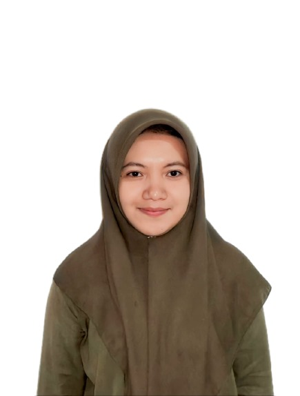

CURICULUM VITAE

| Nama |
: Ildha Rahmelia Umasugi |
| Alamat |
: Ternate |
| No Telepon |
: 081356489030 |
| Email |
:
ildhau@gmail.com
|
DESKRIPSI
Nama saya adalah Ildha biasa di panggil Cici, saat ini saya sedang menjalani program pertukaran
pelajar di universitas pasundan, jurusan teknik informatika. Sejak kecil, saya selalu tertarik
dengan dunia teknologi dan komputer. Hal ini membuat saya tertarik untuk belajar lebih dalam
mengenai dunia ini dan memilih jurusan Teknik Informatika untuk melanjutkan pendidikan.
PENDIDIKAN
- SD Inpres Wailau
- SMP Negeri 5 Satap Sanana
- SMA Negeri 1 Sanana
SEMINAR/WORKSHOP
- Seminar
- Workshop
- Seminar
PELATIHAN
- Oracle Academy
- Digital Talent Scholarship
- Dicoding
BAHASA PEMROGRAMAN